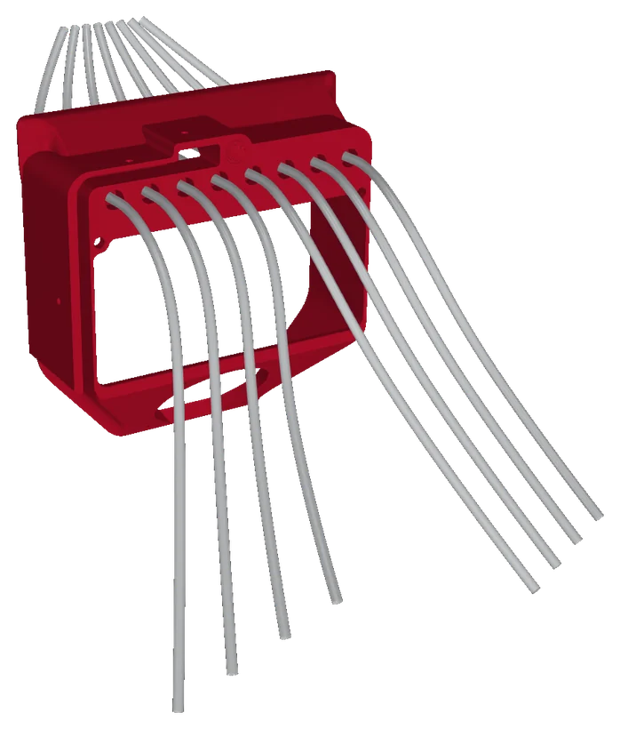
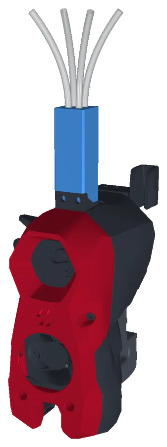
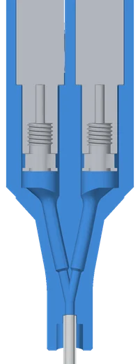

Setups · for an ACE Pro on a Voron
Two ways we feed four or eight ACE Pro spools into a Voron Stealthburner with a FilamATrix cutter. Both run on our printers today. Pick the one that fits your printer; what to buy, print and set is below.
| What | A · Anycubic hub | B · Bambu Lab splitters |
|---|---|---|
| Slots | 4 or 8: the same body takes either hub | 4 with one splitter, 8 with a printed funnel holding two |
| Into the printer | Both: through our printed rear vent, eight holes across its top, one per tube | |
| Where it sits | On the toolhead: in place of the ECAS coupler, two M3 screws into the front body | On the frame: at the back, top center, with one PTFE tube to the stock ECAS |
| Top of Z | The hub's tubes need room under the lid, so the toolhead can stop short of the top | All the way up: the toolhead carries one tube, like any Bowden |
| You buy | An Anycubic 4- or 8-color hub | One or two Bambu Lab 4-in-1 splitters |
| You print | Nothing | The funnel, for eight |
At the top of Z
Its four or eight tubes leave the top and bend under the lid, so the toolhead can stop short of the top.
The toolhead carries one tube, like any Bowden, and travels all the way up.

At the back
The tubes from the ACE Pros come in through a rear vent we designed and printed: eight holes across the top, above the exhaust, one per tube. The same vent serves both setups.
Setup A

From the unit to the nozzle
You'll need
In Elyir Bench
Good to know
Setup B

Inside the funnelFrom the unit to the nozzle
You'll need
In Elyir Bench
Good to know
An ERCF on a Stealthburner, a Box Turtle hub, something of your own: show us on Discord, and the good ones join this page.